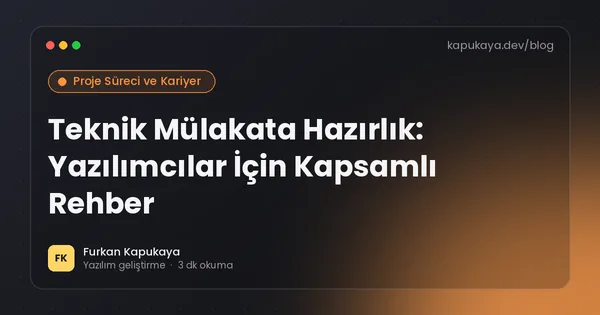
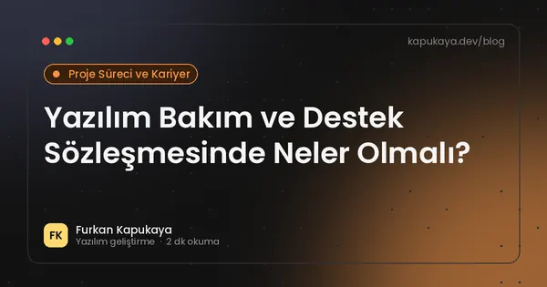

Proje Süreci ve Kariyer
Yazılım projesi yönetimi, teklif ve kapsam, teslim süreçleri, freelance çalışma ve yazılımcı kariyeri.
Bu konuda okuma yolları:Excel'den yazılıma geçiş6 yazıYazılımcı kariyeri6 yazı
15 yazı

Yazılımcı Portföyü ve GitHub Profili: İşe Alımda Fark Yaratmak
Yazılımcılar için etkili portföy hazırlama; hangi projelerin seçileceği, iyi bir README, GitHub profili, canlı demo, kişisel web sitesi ve deneyimsiz adaylar için proje fikirleri.
Yazıyı oku
Teknik Mülakata Hazırlık: Yazılımcılar İçin Kapsamlı Rehber
Yazılım geliştirici mülakatlarının aşamaları, temel konu başlıkları, kodlama sorularında yaklaşım, sistem tasarımı, ev ödevi projeleri, davranışsal sorular ve mülakatta sorulacak sorular.
Yazıyı oku
Yazılım İşlerinde Süre Tahmini: Neden Hep Şaşar, Nasıl İyileşir?
Yazılım geliştirmede süre tahminlerinin neden yanıldığı, işi parçalara bölme, aralıklı tahmin, belirsizlik payı, story point ve geçmiş veriye dayalı tahmin ile müşteriye tahmin iletme yöntemleri.
Yazıyı oku
Agile, Scrum ve Kanban: Küçük Ekipler İçin Pratik Rehber
Çevik (agile) yaklaşımın temel fikirleri, Scrum'ın rolleri, etkinlikleri ve sprint yapısı, Kanban panosu ve WIP sınırı, iki yöntemin karşılaştırması ve küçük ekiplerde uygulanması.
Yazıyı oku
Yazılımcı Olarak Sürekli Öğrenme: Teknoloji Değişirken Güncel Kalmak
Hızla değişen yazılım dünyasında öğrenmeyi sürdürülebilir kılmak; temel ve geçici bilgi ayrımı, öğrenme kaynakları, öğrenerek yapma, not alma, yapay zekâ ile öğrenme ve tükenmişlikten kaçınma.
Yazıyı oku
Yazılım Projesinde Kapsam Kayması Nasıl Önlenir?
Yazılım projelerinde kapsamın kontrolsüz büyümesinin nedenleri, kapsam belgesi, değişiklik talebi süreci, önceliklendirme ve hem müşteri hem geliştirici açısından sağlıklı proje yönetimi.
Yazıyı oku
Yazılım Projesi İçin Doğru Teklif Nasıl İstenir? Brif Hazırlama Rehberi
Yazılım veya web projesi için teklif isterken hazırlanması gereken brif, kapsam, örnekler, bütçe aralığı, takvim ve teklifleri değerlendirme kriterleri.
Yazıyı oku
Yazılımda Kaynak Kod Sahipliği: Sözleşmede Nelere Dikkat Edilmeli?
Özel yazılım projelerinde kaynak kodun kime ait olduğu, FSEK kapsamında mali hakların devri, yazılı sözleşme şartı, açık kaynak bileşenler, erişim bilgileri ve proje bitiminde teslim edilmesi gerekenler.
Yazıyı oku
Yazılım Teslim Alırken Kabul Testi Nasıl Yapılır?
Özel yazılım projelerinde teslim öncesi kullanıcı kabul testi, test senaryoları hazırlama, gerçek veriyle deneme, hata raporlama, kabul kriterleri ve canlıya geçiş kararı.
Yazıyı oku
Yazılım Projesi İçin Bütçe Nasıl Planlanır?
Özel yazılım projelerinde bütçeyi belirleyen etkenler, sabit fiyat ve zaman bazlı modeller, aşamalı ödeme, gizli maliyetler, bakım ve büyüme payı ile bütçeyi verimli kullanma önerileri.
Yazıyı oku
Freelance Yazılım Projesi Nasıl Yönetilir?
İhtiyaç analizi, kapsam, teknik planlama, teslim ve bakım aşamalarını daha sağlıklı yönetmek için pratik yaklaşım.
Yazıyı oku
Git ve GitHub Başlangıç Rehberi: Temel Komutlar ve İş Akışı
Git ile sürüm kontrolünün temelleri, sık kullanılan komutlar, dal (branch) mantığı, pull request akışı, .gitignore ve gizli bilgileri koruma önerileri.
Yazıyı oku
MVP Nedir? Yazılım Fikrinizi En Az Riskle Test Etmek
Minimum uygulanabilir ürünün (MVP) ne olduğu, ilk sürümde hangi özelliklerin yer alması gerektiği, kullanıcı geri bildirimiyle geliştirme ve işletme içi yazılımlarda MVP yaklaşımı.
Yazıyı oku
Junior .NET Developer İçin Yol Haritası
C# ve .NET ile gerçek dünya becerileri geliştirmek isteyen yazılımcılar için pratik öğrenme yol haritası.
Yazıyı oku
Yazılım Bakım ve Destek Sözleşmesinde Neler Olmalı?
Teslim sonrası yazılım bakım ve destek sözleşmesinin kapsamı, hata düzeltme ile yeni geliştirme ayrımı, müdahale süreleri, güncellemeler, yedekleme, kaynak kodu ve sözleşme bitişi.
Yazıyı oku
Aramanızla eşleşen yazı bulunamadı. Farklı bir kelime deneyin veya tüm yazıları gösterin.